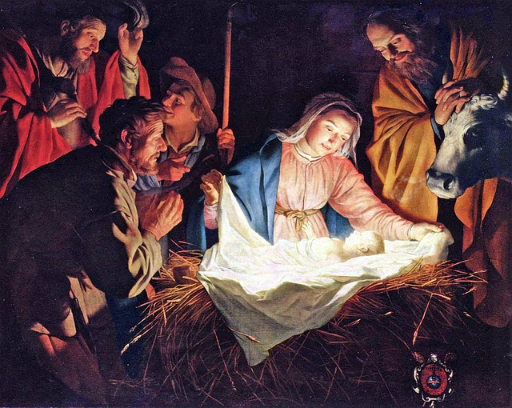

Complete History Of CHRISTMAS
In the Western world, the birthday of Jesus Christ has been celebrated on December 25th since AD 354, replacing an earlier date of January 6th. The Christians had by then appropriated many pagan festivals and traditions of the season, that were practiced in many parts of the Middle East and Europe, as a means of stamping them out.
There were mid-winter festivals in ancient Babylon and Egypt, and Germanic fertility festivals also took place at this time. The birth of the ancient sun-god Attis in Phrygia was celebrated on December 25th, as was the birth of the Persian sun-god, Mithras. The Romans celebrated Saturnalia, a festival dedicated to Saturn, the god of peace and plenty, that ran from the 17th to 24th of December. Public gathering places were decorated with flowers, gifts and candles were exchanged and the population, slaves and masters alike, celebrated the occasion with great enthusiasm.
In Scandinavia, a period of festivities known as Yule contributed another impetus to celebration, as opposed to spirituality. As Winter ended the growing season, the opportunity of enjoying the Summer's bounty encouraged much feasting and merriment.
The Celtic culture of the British Isles revered all green plants, but particularly mistletoe and holly. These were important symbols of fertility and were used for decorating their homes and altars.
New Christmas customs appeared in the Middle Ages. The most prominent contribution was the carol, which by the 14th century had become associated with the religious observance of the birth of Christ.
In Italy, a tradition developed for re-enacting the birth of Christ and the construction of scenes of the nativity. This is said to have been introduced by Saint Francis as part of his efforts to bring spiritual knowledge to the laity.
Saints Days have also contributed to our Christmas celebrations. A prominent figure in today's Christmas is Saint Nicholas who for centuries has been honored on December 6th. He was one of the forerunners of Santa Claus.
Another popular ritual was the burning of the Yule Log, which is strongly embedded in the pagan worship of vegetation and fire, as well as being associated with magical and spiritual powers.
Celebrating Christmas has been controversial since its inception. Since numerous festivities found their roots in pagan practices, they were greatly frowned upon by conservatives within the Church. The feasting, gift-giving and frequent excesses presented a drastic contrast with the simplicity of the Nativity, and many people throughout the centuries and
he present, condemn such practices as being contrary to the true spirit of Christmas.
The earliest English reference to December 25th as Christmas Day did not come until 1043
The Birth of Jesus

In the Western world the birthday of Jesus Christ has been celebrated on December 25th since AD 354, partly to replace the pagan worship that was commonplace in those days. However, we can be fairly sure that Jesus wasn't actually born on that date.
The Bible tells us that shepherds were staying out in the fields overnight when Jesus was born (Luke 2:8), but in that part of the world it would have been far too cold at night to do so in December. What is more likely is that He was born in the Spring, perhaps between March and May. Whatever the time of year, it is virtually impossible to identify the actual date.
This situation is further complicated by the fact that the Christian scholar Dionysius Exiguus was asked by the Pope in AD 525 to calculate new cycles for fixing the date of Easter. However, he decided to base his calculations on the date of Jesus's birth. Unfortunately, it wasn't discovered until the 9th century that he got it badly wrong, by which time it was too late to change the calendar.
He fixed the birth in the year 1 BC or AD 1 (Historians apparently can't agree which.) and began counting from the latter. But both earlier and later scholars agreed that Jesus was born at an earlier date. Indeed, it was eventually established that Herod the Great died in Spring of 4 BC. If Jesus had been born at the start of AD 1, as we currently have it, then Jesus would have been born some 4 or 5 years after Herod died. There is no way of accurately establishing the actual date of his birth, but it is most likely to have been between 5 and 6 BC.
The important thing is that he was born, and his nominal birth date of December 25th seems as good as any to celebrate his birth and his message. It also a wonderful catalyst for enjoying the precious and simple pleasures of being, if only for a brief time, close together in the warm familiarity of friends and family, renewing relationships and sharing memories.
{kind=link}
{kind=link}